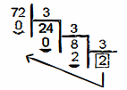
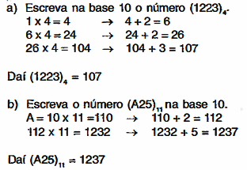
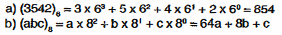

Common Number Systems
Every number system must include the digit 1 (one).
-
Binary system (base 2)
Uses two digits:0, 1. -
Ternary system (base 3)
Uses three digits:0, 1, 2. -
Decimal system (base 10)
Uses ten digits:0, 1, 2, 3, 4, 5, 6, 7, 8, 9.
In this system, each digit is called a numeral. -
Base 11 system
Uses eleven digits:0, 1, 2, 3, 4, 5, 6, 7, 8, 9, A
WhereA = 10. -
Base 12 system
Uses twelve digits:0, 1, 2, 3, 4, 5, 6, 7, 8, 9, A, B
WhereA = 10andB = 11. -
Hexadecimal system (base 16)
Uses sixteen digits:0, 1, 2, 3, 4, 5, 6, 7, 8, 9, A, B, C, D, E, F
WhereA = 10,B = 11,C = 12,D = 13,E = 14,F = 15.
Base Conversion
To simplify explanation, we will call any base other than base 10 a non-decimal base.
Case 1: From base 10 to another base
Divide the number in base 10 by the target base until the remainder is less than the base. Then write the remainders in reverse order of calculation.
Example:

TQM - Fundamental, chapter 1, page 1.
Note: When a number is written in a non-decimal base, it should appear inside parentheses, with the base indicated to the lower right of the second parenthesis. For base 10, this is not required.
From any base to base 10
Multiply the first digit by the base value, add the second digit, then multiply the result again by the base and add the third digit. Repeat this until the last digit from left to right.
Examples:

TQM - Fundamental, chapter 1, page 1.
Multiply each digit (from right to left) by increasing powers of the base, starting at exponent 0.

From any base to another base
There is no direct method for this conversion. You must first convert to base 10, then to the desired base.